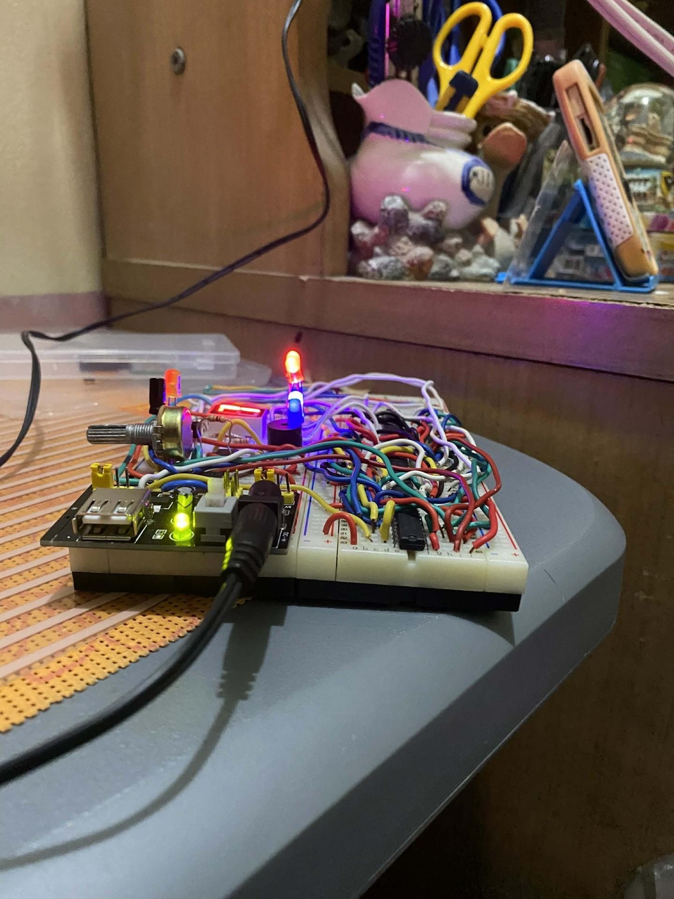
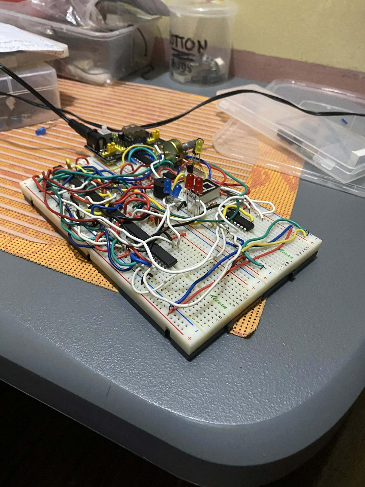
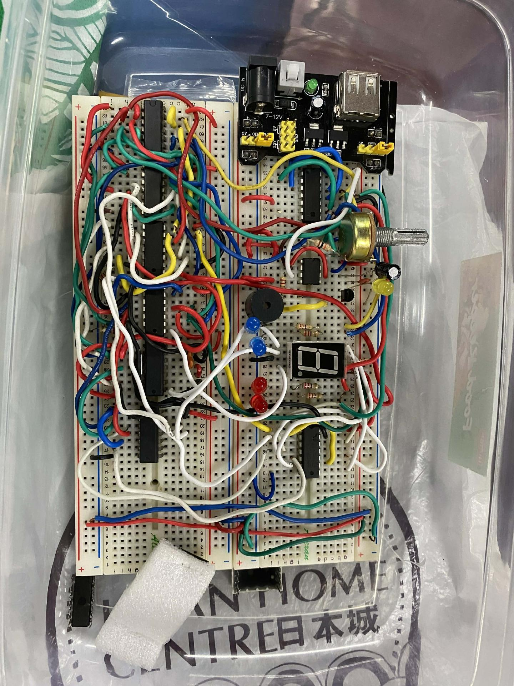

Isometric View 1

Isometric View 2

Top View

Final



This is a 0-9 counter made of AND/Nand family gates only.
This project uses basic logic gates to create a "state machine." By using only AND and NAND gates, you've built the flip-flops and decoding logic necessary to count from 0 to 9 in binary and then convert that signal to drive a 7-segment display. It’s a classic exercise in Boolean algebra.